← Índice de los 69 tutes de IDA
Tute 16 · Unpacking ASPack 2.2
▶ video afín (mismo autor, en x64dbg): «13 Unpacking 2 - OEP»
INTRODUCCIÓN AL REVERSING CON IDA PRO DESDE CERO PARTE 16.
DESEMPACANDO UnPackMe_ASPack 2.2.
Antes de seguir con mas reversing haremos un ejercicio más de unpacking con otro target, en este caso UnPackMe_ASPack 2.2.
El mismo se encuentra en la categoría de los sencillos, más adelante en el curso luego de abordar otros temas volveremos con unpacking avanzado.
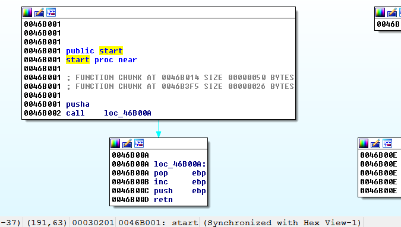
Allí vemos el Entry Point del archivo empacado, comienza con la instrucción PUSHAD, que no habíamos visto entre las principales pero lo que hace es hacer un PUSH de cada registro al stack, o sea
PUSHAD es igual a PUSHEAR o sea guardar en el stack los registros en el siguiente orden
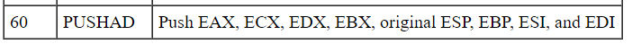
Inversamente POPAD es la operación inversa hace POP del contenido del stack guardándolo en los registros en el siguiente orden (salvo ESP ese no se toca al hacer POPAD).
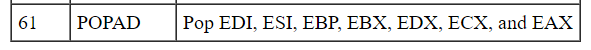
En los packers sencillos, la mayoría al iniciarse hacían PUSHAD para guardar el estado original de los registros al arrancar y hacían POPAD para restaurarlos antes de saltar al OEP a ejecutar el programa ya desempacado en memoria.
Gracias a esto se podía hallar fácilmente el OEP utilizando el método del PUSHAD-POPAD, obviamente en packers más modernos se han dado cuenta de esto y evitan usar esas instrucciones.
Como es el método del PUSHAD-POPAD, veamos.
Primero que nada, tenemos que elegir el debugger y arrancarlo, ya sabemos hacer eso en DEBUGGER- SELECT DEBUGGER y elegimos LOCAL WIN32 DEBUGGER.
Eso ya lo sabemos, pero ahora para practicar lo arrancaremos desde Python, pueden tipear las instrucciones una a una en la barra de Python o usar el plugin que instalamos IpyIDA que es más cómodo yo lo hare así.
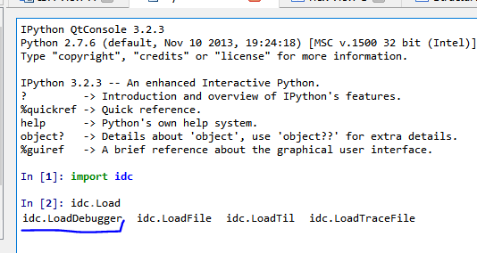
Vemos que al escribir idc.Load y apretar TAB me dice que existe idc.LoadDebugger, veamos.
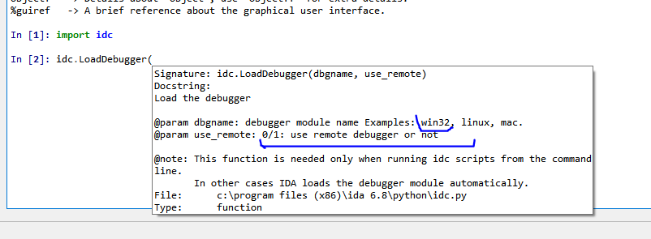
Vemos que en el caso nuestro debemos elegir win32 y 0 para local (se usa 1 para debugger remoto).
Probemos.
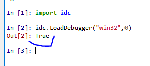
Parece que le gusto contesto TRUE.
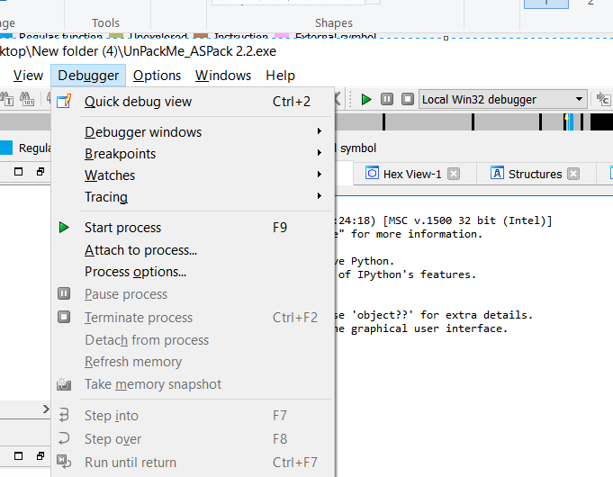
Vemos que ya está elegido si vuelvo a repetir el mismo comando me contesta FALSE porque ya estaba arrancado.
El método del PUSHAD se basa en ejecutar el PUSHAD y en la siguiente instrucción, buscar los registros que guardo en el stack y a continuación poner un breakpoint para que cuando lo trate de recuperar con el POPAD justo antes de saltar al OEP, luego de desempacar el código original, se detenga el debugger.
O sea que poniendo con F2 un breakpoint después del PUSHAD ya pararíamos después de ejecutarlo. (PUSHA es similar a PUSHAD).
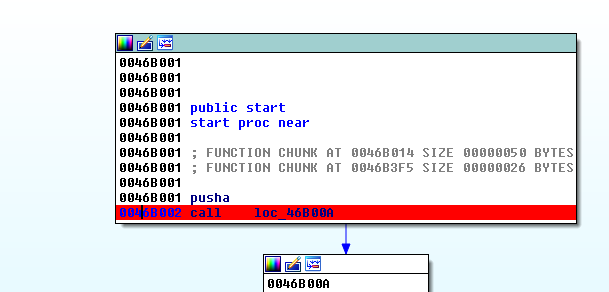
El que lo quiere hacer desde Python puede tipear.
idaapi.add_bpt(0x46b002, 0, BPT_SOFT)
Con eso se agrega el breakpoint desde Python el primer argumento es la dirección, el segundo el largo del breakpoint y el tercero es el tipo en este caso el breakpoint normal por software BPT_SOFT o 0.
Ya seleccionamos el DEBUGGER, pusimos el primer breakpoint ahora hay que arrancar el debugger para que pare en el breakpoint eso es sencillo con F9 sino desde Python.
StartDebugger("","","");
Con ese comando arrancara el debugger que elegimos si todo es correcto, y en este caso parara en el BREAKPOINT que pusimos en 0x46B002.
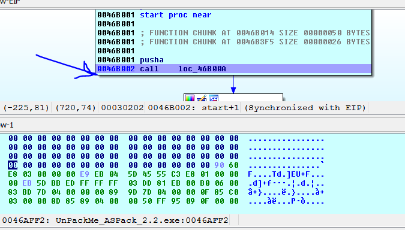
Ahora aquí debemos mirar el stack y poner un breakpoint en la primera línea, ya que es allí donde están los valores de los registros guardados por PUSHAD que más adelante los recuperara con POPAD, para que se detenga allí, al recuperarlos.
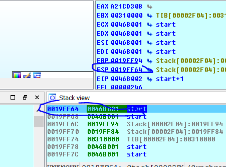
Allí vemos que debemos poner el BP en 0x19FF64 en mi caso, en el de ustedes en su primera dirección del stack, apuntada por ESP.
Ahora pongo el cursor en la ventana del listado y apretó le flechita que está al lado de ESP.
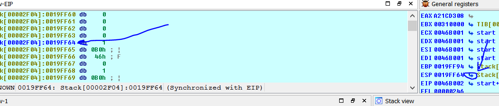
Apretando la flechita al lado de un registro se tratará de mostrar esa dirección si existe, en la ventana donde esta el cursor, así que podemos poner el BREAKPOINT allí, a mano con F2, pero tendremos que configurarlo ya que en este caso debe ser de LECTURA Y ESCRITURA no de ejecución ya que aquí parara cuando recupere o lea el valor no ejecutara código allí.
Al apretar F2 se da cuenta y abre la ventana de configuración del BP.
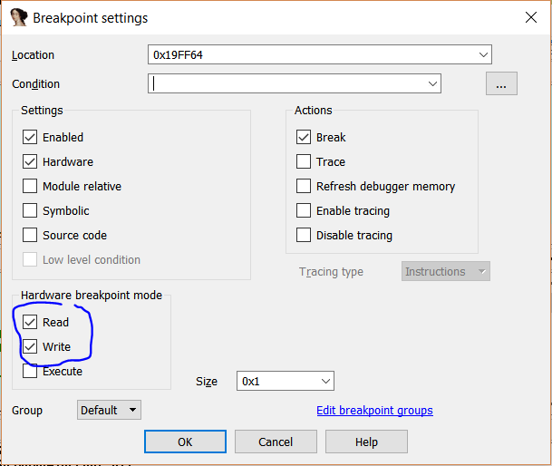
Si no aparece deberíamos ir a DEBUGGER-BREAKPOINTS-BREAKPOINT LIST
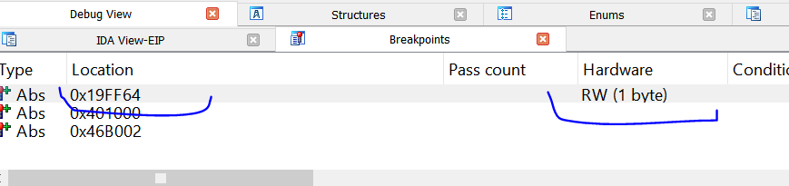
Y haciendo click derecho EDIT podemos cambiar la configuración del que queremos.
Se puede poner este breakpoint desde Python?.
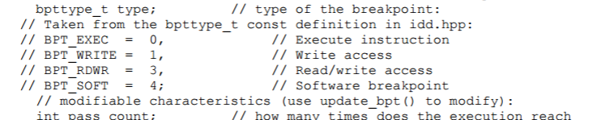
idaapi.add_bpt(0x019FF64, 1, 3)
El argumento 1 es el largo del breakpoint y 3 el tipo de breakpoint en este caso READ-WRITE ACCESS como vemos en la tablita si lo tipeo aparece el mismo breakpoint que pusimos a mano.
Deshabilitamos los BP anteriores a mano en la lista de BREAKPOINTS con click derecho DISABLE o desde Python.
EnableBpt(0x46b002, 0)
Con el segundo argumento igual a 1 lo habilitas, con 0 lo deshabilitas.
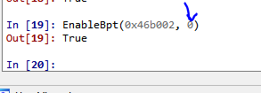
Allí quedo en verde o sea deshabilitado y por supuesto en rojo el del stack.
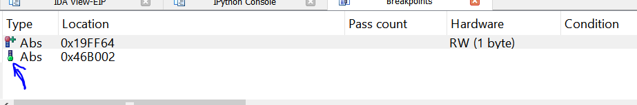
Ahora debemos continuar con F9 o tipear en Python.
idaapi.continue_process()
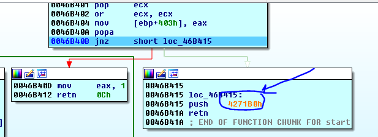
Allí paro justo después del POPAD cuando recupera los registros y vemos que desde el STUB va a saltar al OEP en 0x4271b0 ya que un PUSH XXX - RET es similar a un JMP XXX, así que traceamos un poco hasta llegar al OEP.
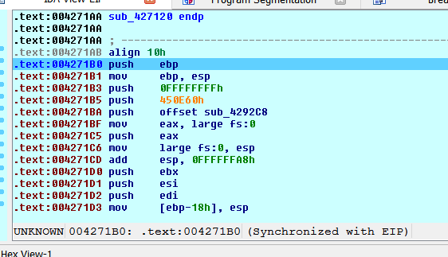
Ahora debemos reanalizar el ejecutable, como hicimos en el caso anterior y creamos la función, si quisiéramos solo hacer un snapshot de la memoria a una database para estudiar, este sería el momento, no lo repetiremos en este caso.
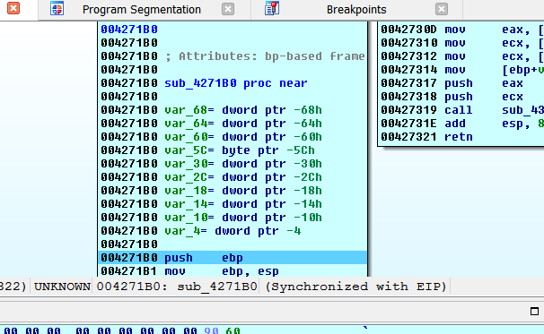
Lo siguiente es dumpear para ello debemos hallar la ImageBase y la dirección final en el último segmento del ejecutable.
En SEGMENTS vemos que la ImageBase es 0x400000 y termina en 0x46e000.
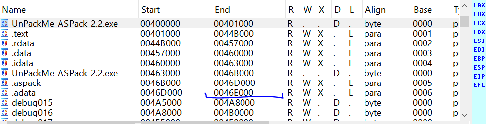
En vez de usar el script que utilizamos en la parte 15 usaremos la versión del mismo de Python.
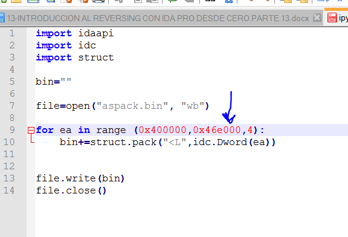
Como esta tiene varias líneas lo armo en un editor de texto y lo guardo como archivo ipython_dump.py lo adjunto al tutorial también.
Ahora desde el menú FILE-SCRIPT FILE lo abro se ejecuta y crea el archivo aspack.bin no tiene icono para ello usamos el PEEDITOR.
PEEDITOR.
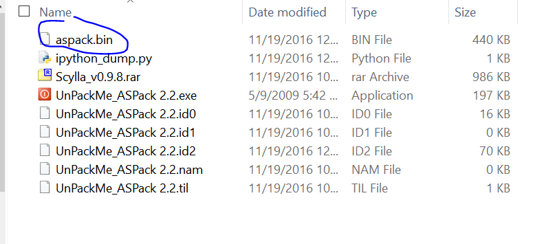
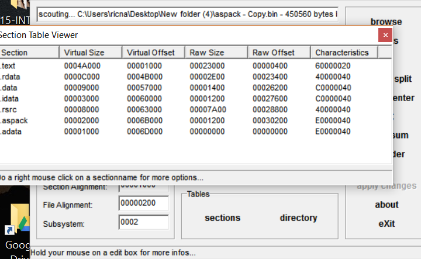
Click derecho DUMP FIXER.
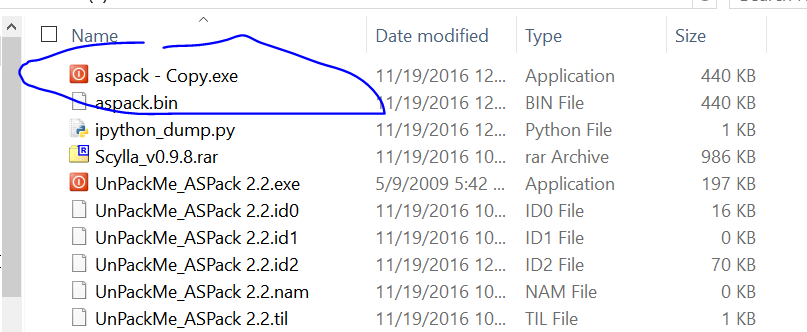
Y al renombrarlo a EXE ya sale el icono.
Ahora abrimos el Scylla 0.98 en esta parte adjunte una versión más nueva, y por supuesto igual que antes buscare el proceso que está detenido aun en el OEP.
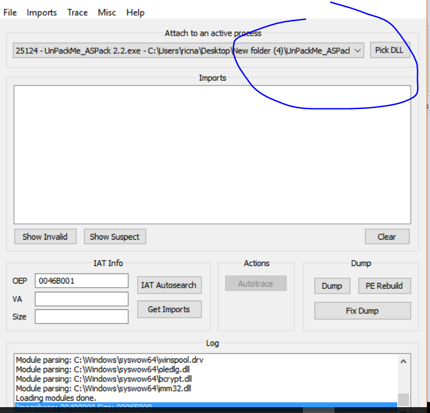
Ahora le ponemos el OEP que es 004271B0 y IAT AUTOSEARCH y GET IMPORTS.
Si apretamos SHOW INVALIDS y elegimos MODO ADVANCED vemos que hay unas cuantas malas, veamos si lo arregla automático.
Vemos que no lo puede arreglar así que miraremos a mano.
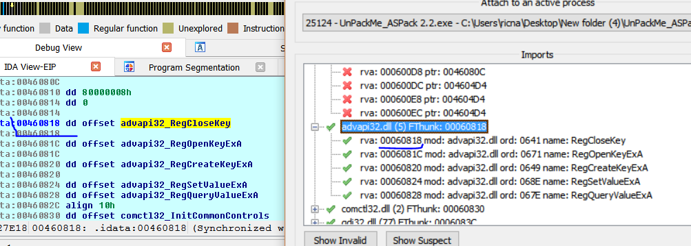
Ahí vemos la primera entrada en 0x460818, esa es válida y coincide, más arriba empiezan las invalidas, veamos que hay en la primera invalida más arriba en 0x4600ec.
Si las acomodo un poco con D y luego las agrupo.
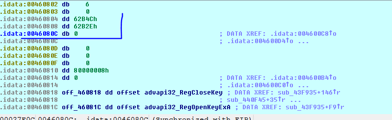
Se ven que el contenido no apunta a ninguna dirección valida y también si apretó CTRL mas X no hay referencias.
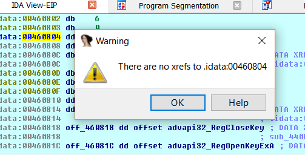
Mientras que en una entrada real habrá referencias cuando se use la api, por ejemplo.
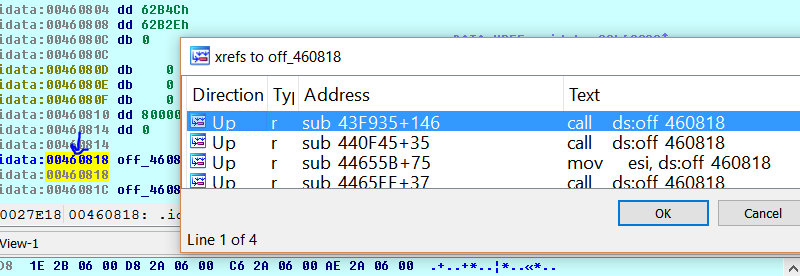
Así que esas no son entradas de la IAT, las quitaremos.
Vemos que si limpio con CLEAR y le doy IAT AUTOSEARCH de nuevo, pero le digo que no use las avanzadas las halla todas bien.
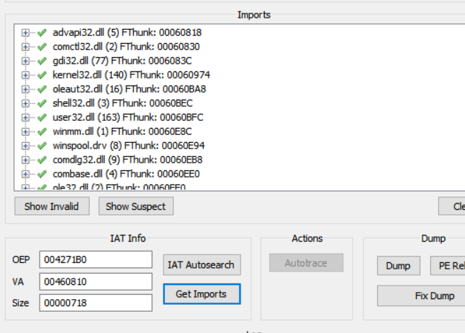
Vemos que la IAT ahora comienza en 0x460810 limpiando las que el MODO ADVANCED había agregado mal.
Así que ahora puedo buscar el dumpeado y apretar FIX DUMP en el.
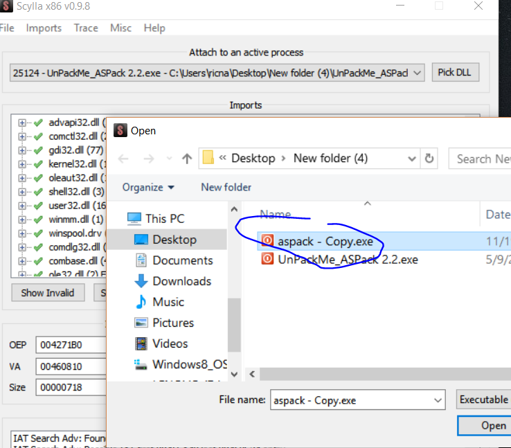
Y al reparado lo ejecuto sin problemas.
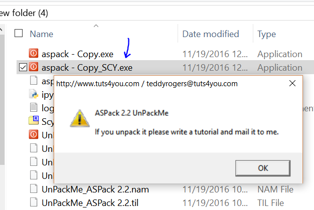
Y escribimos este tutorial ya que lo pide jeje.
Hasta la parte 17.
Ricardo Narvaja